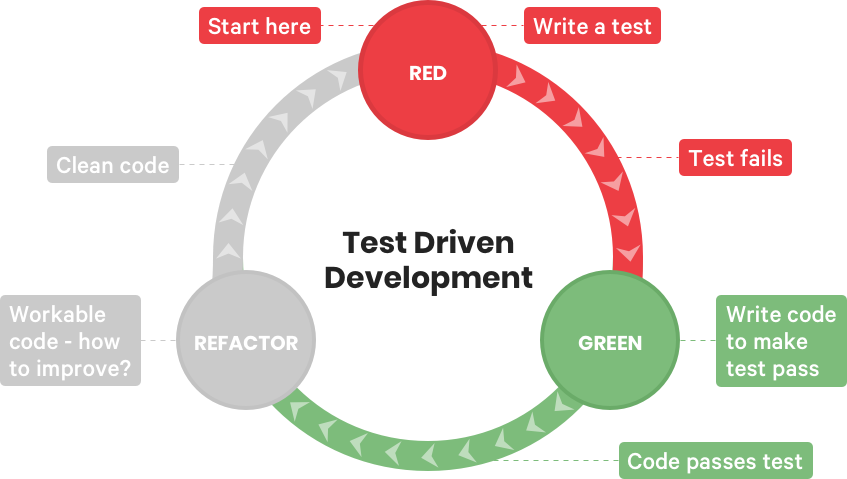
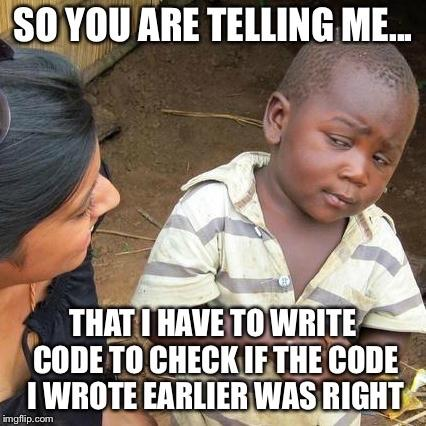
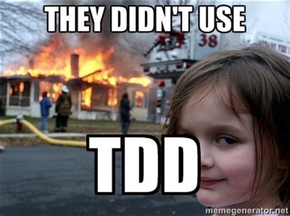

Angular T.D.D.
August, 2019
http://arvindr21.github.io/tdd-ng
Agenda
- T.D.D. background
- What is T.D.D.?
- How to think towards T.D.D.
- Javascript & T.D.D.
- Angular T.D.D.
- Final thoughts
Kent Beck

Why T.D.D. ?
- Writing tests before development
- First think about “how to use” the component
- And only then about “how to implement”
- T.D.D. is a testing technique as well as a design technique
- This will force you to write code such that you end up with code that is safely refactorable
- Such an approach will clearly set an expectations as what other people can expect from your code
Approach




How to T.D.D.
- Use constructors to create instances
- Support configurability
- Keep Methods simple
- Don’t intermingle responsibilities
- And… Write test first!!
Steps
- Understand Requirement
- Work on UI
- Design the business logic
- Write Test Cases
- See them fail
- Write the logic
- See them pass
- Refactor code
- Integration - C.I.
Test Cases { Add() }
| Case | Field I | Field II | Expected results |
|---|---|---|---|
| Correct Sum | 5 | 6 | 11 |
| Incorrect Sum | 5 | 6 | 9 |
| Negative SUM – I | -5 | -6 | 9 |
| Negative value + Positive value | -5 | 6 | 1 |
| Sum is Zero | -6 | -6 | 0 |
| Invalid Field 1 – I | dummyText | 6 | 0 |
| Invalid Field 1 – II | undefined | 6 | 0 |
| Invalid Field 1 – III | null | 6 | 0 |
| Invalid Field 1 – IV | $$ | 6 | 0 |
| Invalid Field 2 – I | 5 | dummyText | 0 |
| Invalid Field 2 – II | 5 | undefined | 0 |
| Invalid Field 2 – III | 5 | null | 0 |
| Invalid Field 2 – IV | 5 | $$ | 0 |
| Both Invalid Fields I | dummyText | dummyText | |
| Both Invalid Fields II | null | null | 0 |
| Both Invalid Fields III | null | undefined | 0 |
| Both Invalid Fields IV | $$ | #@ | 0 |
Let's add up
https://stackblitz.com/edit/typescript-tdd
Angular TDD
https://stackblitz.com/edit/tdd-angular